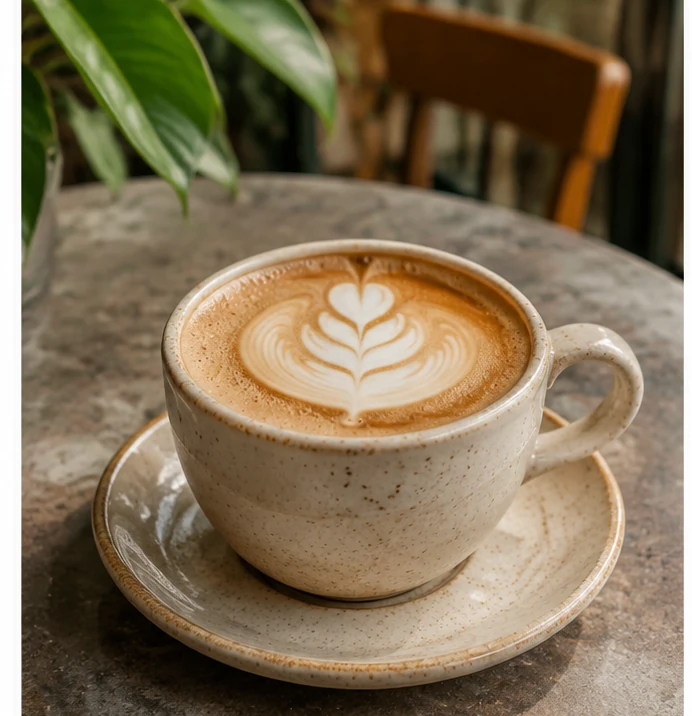
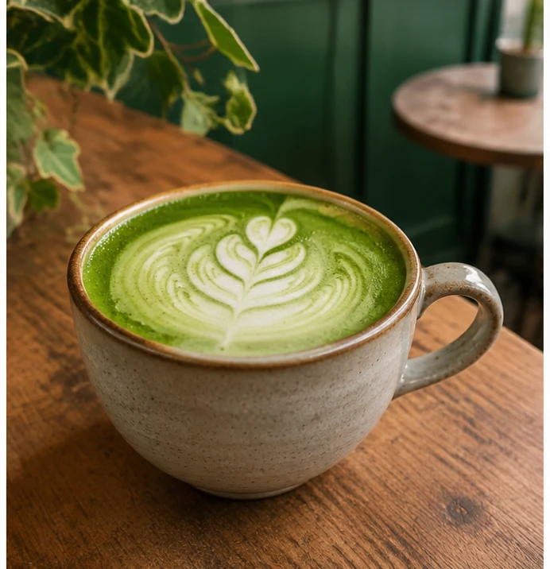

01 / OUR MENU
Whether it’s your usual coffee, a refreshing iced drink or a little something sweet, find your next favourite here.
EXPLORE THE MENU ↗
01 / MADE TO SIP
From the first espresso to the last iced sip. Pick the one that feels right today.

ONE GOOD CUP AT A TIME02 / BAKED & BEAUTIFUL
A little something sweet to enjoy with your cup. Choose your treat, then stay for a while.

A LITTLE SOMETHING FOR EVERY MOOD
Find us on Ridley Road, Dalston. We’ll take care of the coffee.
FIND US ↗